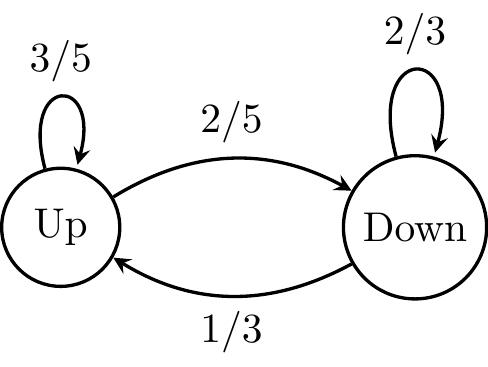

library(ggplot2)
library(tidyr)
library(dplyr)
set.seed(1234)
W <- 100L
Pr <- 0.5
N <- 365L * 10L # 10 years
n <- 50L # compute 50 possible futures
run_chain <- function(N, p, w) {
s <- sample(c(-1, 1), size = N, prob = c(p, 1-p), replace = TRUE)
balance <- w + cumsum(s)
return(balance)
}
chains <- replicate(n, run_chain(N, Pr, W))
chains_df <- as.data.frame(chains) |>
mutate(Time = 1:n())
chains_df <- chains_df |>
pivot_longer(
cols = -Time,
names_to = "Chain",
values_to = "Value"
)
# color more extreme futures more red and less extreme more green
extremeness <- chains_df |>
group_by(Chain) |>
summarize(extreme = max(abs(Value - W)), .groups = "drop")
chains_df <- left_join(chains_df, extremeness, by = "Chain")
ggplot(chains_df, aes(x = Time/365, y = Value, group = Chain, color = extreme)) +
geom_line(linewidth = 0.1) +
labs(title = "Evolution of $100 assuming Pr(Up $1) = 1/2 = Pr(Down $1)",
x = "Time (years)", y = "Balance") +
scale_color_gradient(low = "green", high = "red") +
theme_minimal() +
theme(legend.position = "none")Markov Chains
A Markov chain is a stochastic process represented by a sequence of random variables \(Y = Y_0, Y_1, \dots\) that obeys a Markov property. In words, the Markov property says that the future is independent of the past, conditioned on the present.
\[ \DeclareMathOperator{\E}{\mathbb{E}} \DeclareMathOperator{\P}{\mathbb{P}} \DeclareMathOperator{\V}{\mathbb{V}} \DeclareMathOperator{\L}{\mathcal{L}} \DeclareMathOperator{\I}{\text{I}} \DeclareMathOperator*{\argmax}{arg\,max} \DeclareMathOperator*{\argmin}{arg\,min} \P(Y_{t+1}=y_{t+1} \mid Y_t=y_t, Y_{t-1}=y_{t-1}, \dots, Y_0=y_0) = \P(Y_{t+1}=y_{t+1} \mid Y_t=y_t) \]
You can think of a Markov Chain as a process that evolves in time according to some rule governed by probabilities of moving around its state space.
A discrete state space of a Markov Chain is a collection of all possible states that this chain can visit, which can be finite or infinite.
Consider a Markov chain with infinite but discrete state space. You start with $100 in your account and every day, you can either make $1 with probability \(1/2\), or lose $1. If you are allowed to overdraft the account, the state space is all integers. The Markov property is satisfied since, on any given day, you only need to know the balance during the previous day, not the whole history of transactions. We can visualize this process with a simulation.
As an example of a finite, discrete state space, consider a market that could go up or down daily. If it is an up day, we assume that tomorrow will be an up day with probability 3/5 and a down day with probability 2/5. If it is a down day, tomorrow will be a down day with probability 2/3 and an up day with probability 1/3. This kind of mild memory encodes the fact that there is a slightly higher probability of going down if we are in the down day than going up if we are in the up day.
This chain has only two states, Up and Down, and it can be visualized using a graph and encoded using a matrix, which we will call a transition matrix Q.

The following transition matrix \(Q = \begin{pmatrix} \frac{3}{5} & \frac{2}{5} \\ \frac{1}{3} & \frac{2}{3} \end{pmatrix}\), correspods to the above tranisiton graph.
\[ Q = \begin{array}{c|cc} & \text{Up} & \text{Down} \\ \hline \text{Up} & \frac{3}{5} & \frac{2}{5} \\ \text{Down} & \frac{1}{3} & \frac{2}{3} \end{array} \]
This matrix has a property that all rows sum to one. Each entry of the matrix can specified by \(q_{y_t,\, y_{t+1}} = \P(Y_{t+1}=y_{t+1} \mid Y_t=y_t)\) which is the probability of transitioning from state \(y_t\) to state \(y_{t+1}\). For example suppose we are at \(y_t = \text{Up}\), then \(q_{t,\, t+1} = 3/5\) is the probability of another up day tomorrow (at time \(t+1\)) and \(q_{t,\, t+1} = 2/5\) is the probability of a down day tomorrow. To simplify the notation we will label \(y_t = i\), and \(y_{t+1} = j\), following the usual matrix notation, with \(q_{ij}\), indexing each entry in \(Q\).
Let’s say we start in \(y_t = \text{Up}\) and run the process for 10,000. What proportion of time will we spend in a happy Up state? We will run a simulation first and then check the result analytically.
library(expm)
T <- 1e5
states <- c(1, 0) # 1: up day, 0: down day
y <- numeric(T)
Q <- matrix(c(3/5, 2/5,
1/3, 2/3), ncol = 2, byrow = TRUE)
y[1] <- 1 # start in the up day
for (t in 2:T) {
if (y[t-1] == 1) {
y[t] <- sample(states, size = 1, prob = c(Q[1, 1], Q[1, 2]))
} else {
y[t] <- sample(states, size = 1, prob = c(Q[2, 1], Q[2, 2]))
}
}
cat("Proportion of happy Up days:", mean(y) |> round(3))Proportion of happy Up days: 0.455Powers of Q
The long-term equilibrium is reached when the proportions have stabilized, and the distribution over states at that time is called a stationary distribution of the Markov chain, which, in this case, will be in the form of a PMF. For the type of chain we are considering, it can be shown that the stationary distribution exists and is unique.
library(ggplot2)
library(gganimate)
library(dplyr)
library(purrr)
pairs <- expand.grid(i = -10:10, j = -10:10)
lin_trans <- function(M, x) {
stopifnot(diff(dim(M)) != 0) # must be square matrix
stopifnot(dim(m)[2] == dim(pairs)[1])
return(M %*% x)
}
# animated_data <- map_dfr(angles, ~ rotate_points(.x, pairs))
#
# stopifnot(!any(is.na(animated_data$time)))
# stopifnot(is.numeric(animated_data$time))
#
# p <- ggplot(animated_data, aes(x = x, y = y)) +
# geom_point(size = 0.1, alpha = 0.8) +
# geom_vline(xintercept = 0, linewidth = 0.1) +
# geom_hline(yintercept = 0, linewidth = 0.1) +
# coord_fixed() +
# labs(x = "x", y = "y", title = "Rotation: {frame_time}°") +
# theme_minimal() +
# transition_time(time) +
# shadow_mark(past = TRUE, future = FALSE, alpha = 0.2, size = 0.1)
#
# animate(p, fps = 10, width = 500, height = 500, duration = 5)Solving with the Eigen decomposition
# Compute eigenvalues and eigenvectors of the transpose of Q.
eigen_res <- eigen(t(Q))
print(eigen_res)eigen() decomposition
$values
[1] 1.0000000 0.2666667
$vectors
[,1] [,2]
[1,] -0.6401844 -0.7071068
[2,] -0.7682213 0.7071068stationary_vec <- eigen_res$vectors[, 1]
# Normalize to ensure the elements sum to 1
stationary_distribution <- stationary_vec / sum(stationary_vec)
names(stationary_distribution) <- c("Up", "Down")
print(stationary_distribution |> round(2)) Up Down
0.45 0.55